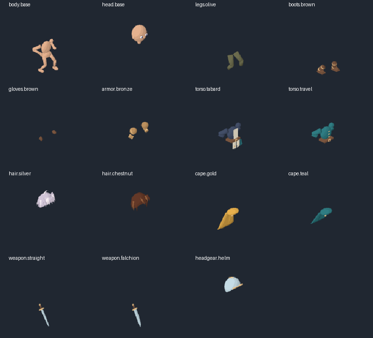

Silver Scarf: modular rig study v4
Original rig and complete replaceable parts, rendered into eight directional sprites. This is a technical prototype. Character art, acting and sword effect are unapproved; the rejected painted v3 is retained only as failure evidence.


All parts use one 800 ms timeline: 80 / 100 / 100 / 60 / 60 / 120 / 140 / 140 ms. Swapping compatible equipment keeps the current phase. Helmet coverage hides the hair slot while keeping the complete bald head. Turning loads a complete new facing without image mirroring.
Complete separate sources

These contain full geometry even where another equipped item normally hides them. The browser composes visibility at 256 px and resolves to a 128 px sprite. Its CPU depth composition is a research harness; production game integration and translucent trail sorting remain open.
Export quality report · Browser checks · Scope and reproduction